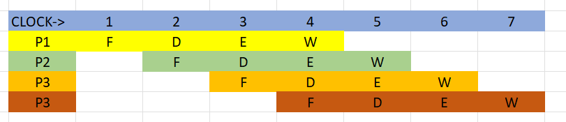

PIPELING
What is a Pipeling?
Pipelining is a technique used in computer architecture where the execution of instructions is overlapped in multiple stages. Each stage of the pipeline performs a specific operation on an instruction, allowing several instructions to be processed simultaneously. This enhances the throughput and efficiency of the CPU by reducing the time wasted waiting for one instruction to complete before starting the next one.
Stages of Pipeling
In computing, a pipeline refers to a series of processing stages where data is passed through each stage to perform a specific task. Here are the typical stages of a pipeline:
- Fetch: In a CPU pipeline, the first stage is fetching instructions from memory. This involves fetching the next instruction to be executed from memory and moving it to the instruction decoder.
- Decode: Once the instruction is fetched, it needs to be decoded to determine the operation it represents and the operands involved. The decode stage typically converts the instruction into a set of control signals for subsequent stages.
- Execute: In this stage, the instruction is actually executed. This might involve arithmetic or logical operations, memory accesses, or other computations depending on the instruction type.
- Write Back: After the execution of the instruction, the result may need to be written back to a register or memory location. This stage completes the instruction execution and prepares for the next instruction.

Advantages of Pipelining
- Increased Throughput: By allowing multiple instructions to be processed simultaneously, pipelining increases the overall throughput of the CPU. This means that more instructions can be executed in a given amount of time, leading to improved performance.
- Faster Execution: Pipelining reduces the time taken to execute individual instructions by overlapping their execution. This results in faster program execution and better responsiveness of the system.
- Better Resource Utilization: Since different stages of the pipeline can work concurrently, the CPU resources are utilized more efficiently. This means that the CPU is kept busy more of the time, reducing idle time and improving overall efficiency.
- Smoother Performance: Pipelining helps to smooth out the execution of instructions by breaking them down into smaller, more manageable stages. This can help to reduce bottlenecks and prevent large variations in execution time.
- Scalability: Pipelining can be scaled to accommodate different processing requirements. By adding more pipeline stages or optimizing existing stages, the pipeline can be tailored to meet specific performance goals or adapt to changes in workload.
Disadvantages of Pipelining
- Increased Complexity: Implementing pipelining adds complexity to the design of the CPU. Managing pipeline stages, handling hazards, and ensuring proper synchronization require sophisticated techniques, which can make the CPU design more intricate.
- Pipeline Hazards: Pipelining introduces the possibility of pipeline hazards, which are situations where the execution of one instruction is dependent on the result of a previous instruction. These hazards can lead to stalls in the pipeline, reducing its efficiency.
- Resource Wastage: In some cases, pipelining can result in resource wastage. For example, if a branch instruction is encountered and the pipeline has already fetched subsequent instructions, those instructions may need to be discarded, wasting resources.
- Increased Latency for Branches and Dependencies: Branch instructions and data dependencies can cause delays in the pipeline. Branch prediction techniques and forwarding mechanisms are used to mitigate these delays, but they can still impact performance.
- Difficulty in Handling Exceptions: Exception handling becomes more complex in pipelined architectures. When an exception occurs, the CPU must ensure that the pipeline is properly flushed and that the correct state is restored, which can add overhead and latency.
- Energy Consumption: Pipelining can increase energy consumption in the CPU due to the continuous operation of pipeline stages, even when they are not actively processing instructions. This can be a concern in mobile devices and other battery-powered systems where energy efficiency is crucial.